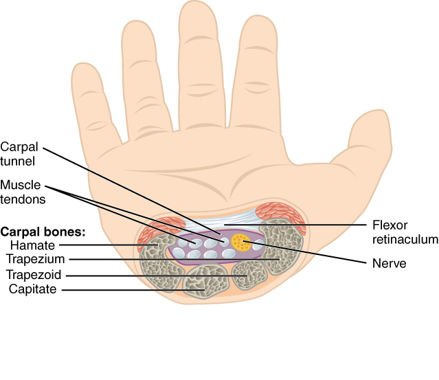

Después de la cirugía
Después de la liberación del túnel carpiano
Qué esperar en los primeros días y semanas después de su cirugía de túnel carpiano, y cómo obtener el mejor resultado.

Lo que se hizo
El ligamento que forma el techo del túnel carpiano fue cortado para aliviar la presión sobre el nervio mediano. Tiene una pequeña incisión en la palma cubierta con un apósito suave.
Los primeros 5 días
- Mantenga el apósito puesto, limpio y seco.
- Mantenga la mano elevada por encima del nivel del corazón tanto como sea posible. Esta es la cosa más útil que puede hacer para reducir la hinchazón y el dolor.
- Mueva los dedos con frecuencia: haga un puño suave y abra la mano completamente, muchas veces al día. El movimiento completo de los dedos desde el principio previene la rigidez.
- Puede usar suavemente la mano para tareas ligeras (comer, vestirse, usar un teléfono). No agarre, levante ni empuje con la mano todavía.
- No levante más de 5 libras (aproximadamente un galón de leche) con la mano operada.
Día 5: se retira el apósito
- Retire el apósito 5 días después de la cirugía. Puede ducharse y mojar la incisión con agua y jabón. Séquela con palmaditas.
- Cubra la incisión con una simple curita adhesiva durante unos días más, o déjela al aire una vez que esté seca y cerrada.
- No remoje la mano (sin bañeras, piscinas, jacuzzis) durante 2 semanas después de la cirugía.
Dolor e hinchazón
- La mayoría de las personas toman analgésicos de venta libre (acetaminofén/Tylenol o ibuprofeno/Advil) durante los primeros días. Muchos no necesitan los analgésicos recetados en absoluto.
- Hielo sobre el apósito (20 minutos con, 20 sin) ayuda a la hinchazón en los primeros 2 a 3 días.
- El "dolor del pilar" es común: dolor a cada lado de la incisión al presionar la palma. Es normal y desaparece en 6 a 12 semanas.
- El entumecimiento y hormigueo que tenía antes de la cirugía pueden mejorar de inmediato o durante varias semanas. Los casos severos pueden tardar varios meses en recuperarse.
Actividad
- Conducir: cuando pueda hacer un puño, tenga movimiento completo de los dedos y se sienta seguro con una mano al volante (generalmente 3 a 5 días).
- Escribir a máquina / trabajo de escritorio: de inmediato, con moderación.
- Regreso al trabajo ligero: la mayoría de los trabajadores de oficina regresan dentro de una semana.
- Regreso al trabajo manual pesado: 4 a 6 semanas. No fuerce agarre o levantamiento pesado hasta recibir autorización.
- Terapia: la mayoría de los pacientes no necesitan terapia de mano formal. Si la mano se siente rígida en su visita de seguimiento, la organizaremos.
Seguimiento
Venga al consultorio 10 a 14 días después de la cirugía para un chequeo de la herida y retiro de suturas. Lo veremos nuevamente a las 6 semanas.
- Tiene fiebre superior a 101°F
- La incisión está drenando pus, se está extendiendo enrojecimiento o está muy caliente
- El dolor está empeorando en lugar de mejorar después de los primeros días
- Tiene nuevo entumecimiento, debilidad o hinchazón severa en la mano
Relacionado
¿Preguntas?
Llame al consultorio al 646-501-4950, o consulte nuestra información de contacto.